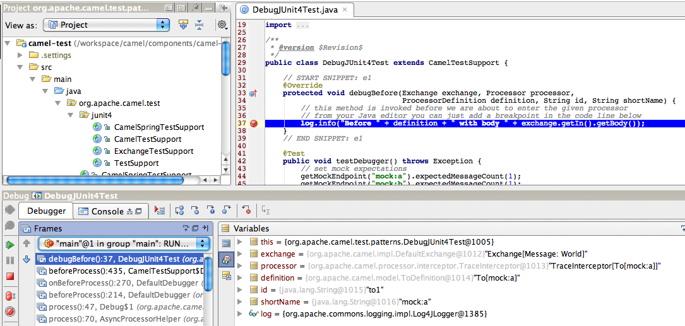

Debugger
The Camel Debugger is intended for third party tooling to make it possible to debug routes, trace messages and to use breakpoints with the EIP patterns in the Camel routes.
The Debugger allows tooling or the likes to attach breakpoints which are being invoked when Exchanges are routed.
Java Debugging Camel routes in unit tests
If you are developing unit tests using the camel-test-junit5 component, then
the Debugger is available if you turn it on via overriding the isUseDebugger()
method and return true.
In this unit test
public class DebugTest extends CamelTestSupportWe want to debug the following route
@Override
protected RouteBuilder createRouteBuilder() throws Exception {
return new RouteBuilder() {
@Override
public void configure() throws Exception {
// this is the route we want to debug
from("direct:start")
.to("mock:a")
.transform(body().prepend("Hello "))
.to("mock:b");
}
};
}Which can easily done by overriding the debugBefore method as shown
@Override
public boolean isUseDebugger() {
// must enable debugger
return true;
}
@Override
protected void debugBefore(Exchange exchange, Processor processor,
ProcessorDefinition<?> definition, String id, String shortName) {
// this method is invoked before we are about to enter the given processor
// from your Java editor you can just add a breakpoint in the code line below
log.info("Before " + definition + " with body " + exchange.getIn().getBody());
}Then from your Java editor just add a breakpoint inside the
debugBefore method. Then fire up the unit test and wait for the Java
editor to hit the breakpoint. Then you can inspect the
Exchange during debugging while it advances during
routing. The ProcessorDefinition and the id and shortName
parameters is all information which tells you where in the route the
breakpoint was hit.
There is also a debugAfter method which is invoked after the processor
has been invoked. This allows you to see what happens to the
Exchange right after it has invoked a processor in the route.
|
The screenshot below shows the Debugger in action. The IDE (IDEA) has hit the breakpoint, and we can inspect the parameters. Notice how we can see that the message is to be sent to the mock:a endpoint.

Java debugging of Camel routes written with Java DSL
A trick to debug a Camel route written with Java DSL is to modify the route to insert a processor and then to set the breakpoint in it.
For instance:
public class MyRouteBuilder extends RouteBuilder {
@Override
public void configure() throws Exception {
from("timer:demo").routeId("foo")
.bean("myBean", "hello")
.process(new Processor() {
@Override
public void process(Exchange exchange) throws Exception {
System.out.println("put a breakpoint here");
}
})
.log("${body}")
.bean("myBean", "bye")
.log("${body}");
}
}Implementing a custom debugger
The debugger API is defined in org.apache.camel.spi.Debugger.
This API has methods to attach and remove breakpoints.
And to suspend/resume all breakpoints etc. You can also attach a condition to the breakpoint, so it only reacts if the condition matches.
Camel provides a base implementation org.apache.camel.impl.DefaultDebugger,
which can be used to extend for custom implementations.
Camel Route debugger through JMX
There is also a Backlog Debugger that allows debugging from JMX.
It is automatically provided when camel-debug is on the classpath (since 3.16) or when
using the camel:debug Maven goal (since 3.18).
To be able to have enough time to add your breakpoints, since 3.18, you could need to suspend the message processing of Camel to make sure
that you won’t miss any messages. For this kind of need, you have to set either the environment variable CAMEL_DEBUGGER_SUSPEND or the system property org.apache.camel.debugger.suspend to true within the context of your application, then the Backlog Debugger suspends the message processing until the JMX operation attach is called. Calling the JMX operation detach suspends again the message processing.
In case the environment variable and the system property are both set, the value of the environment variable is used.
Several third-party tools are using it:
-
hawtio uses this for its web-based debugging functionality
Camel requires to have camel-management JAR on the classpath for having JMX enabled.